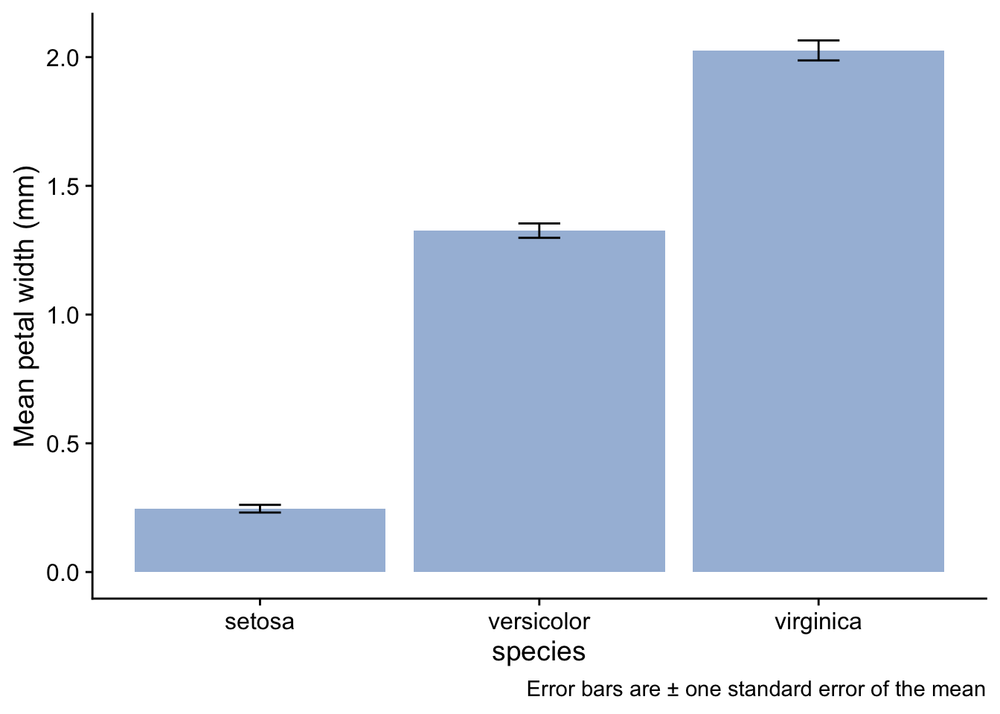
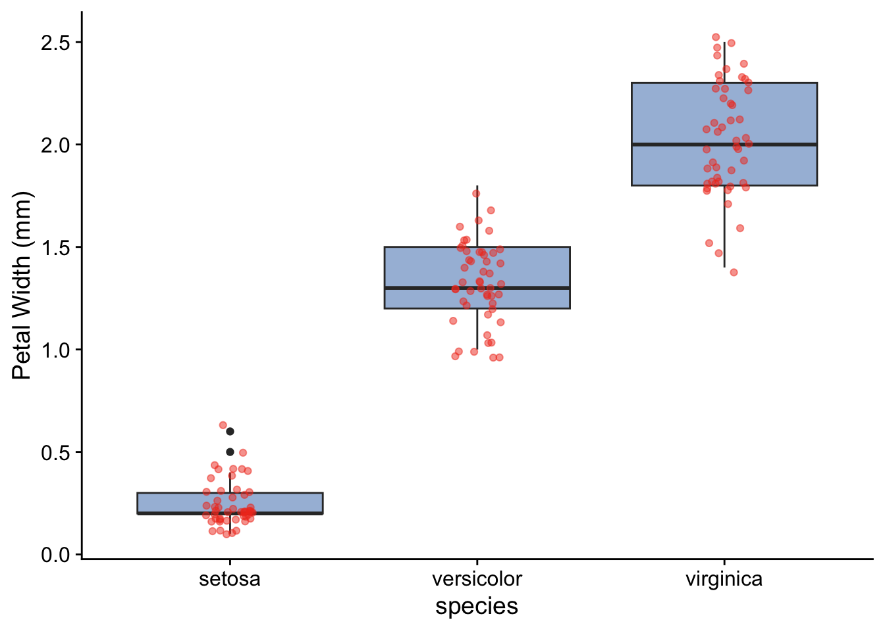

```{r}
library(tidyverse)
library(here)
library(ggfortify)
library(readxl)
library(cowplot)
library(janitor)
library(vegan)
```1 A recommended analysis workflow
This is intended as a rough outline of the sequence of steps one commonly goes through when working on scripts:
- Before you start on the script, ask yourself: am I working in a Project?. If not, fix this!
- What is my question? Am I clear about what I want the script to do?
- Load packages
- Load data
- Inspect data
- Clean up or tidy or manipulate the data in some way - whatever it takes to get it in the form needed for the analysis steps
- Summarise the data
- Plot the data
- Do statistical analysis
- Decide what all this has told you and report it in plain English.
Details will differ from script to script, but this sequence of steps is very common.
1.1 Are you working within your Project?
Before we even think of the script, we need to make sure that we are working within our Project. If we are not doing this, bad things will happen. If you are, the Project name will be at the top right of the RStudio window. If you are not, save the script you are working on, and go to File/Open Project and open your Project. If you haven’t even got a ‘Project’ or don’t know what that means then just make sure that everything you need for whatever you are working on is in one folder and then turn that folder into a Project. (So a ‘Project’ is just a regular folder that has been given superpowers.) You do that by going to File/New Project/Existing Directory. Then you navigate to your folder and click on Create Project. RStudio will then restart and you will see the name of your newly anointed Project folder at the top-right of the RStudio window. You know that a folder is a ‘Project’ because it will have a .Rproj file inside it.
If all this sounds complicated, don’t worry. It really isn’t. Just get someone to show you how to do it and you will be fine.
Now, to the script itself:
1.2 Statement of the question(s) to be investigated
Without thinking this through, you won’t know what your script is for…
What is the analysis that will follow for? What question are you trying to answer? What hypotheses are you trying to test?
Suppose we were trying to test the hypothesis that there is no difference between the petal widths of the setosa, versicolor and virginica species of iris. All we have to go on are the petal widths of the plants we happened to measure. From these measurements we want to make a statement about these three species in general.
1.3 Open a notebook
In RStudio, go to File/New File/ Quarto Document. Delete everything below the yaml section at the top. This strangely named section is the bit between the two lines with three dashes in. For the most part, we will not need to worry about this section. We just should not delete it entirely. What is useful to do is to amend the title to something sensible, and to add author: "your name" and date: "the date in any old format" lines. I also add a couple of final lines that suppress warnings and messages that might clutter up my printed output, so that your yaml will look something like this:
---
title: "A typical workflow"
author: "Who wrote this?"
date: "Today's date"
output:
html_document:
df_print: paged
execute:
message: false
warning: false
---Delete everything beneath this yaml section. The big empty space that then leaves you with is where you write your code. Remember that in quarto documents, the code goes in ‘chunks’ that are started and finished with by lines with three backticks. Any other text goes between the chunks and you can format this text using the simple rule of Markdown, available in the RStudio Help menu at Help/Markdown Quick Reference. Thus your script will end up looking something like this:
---
title: "A typical workflow"
author: "Who wrote this?"
date: "Today's date"
output:
html_document:
df_print: paged
execute:
message: false
warning: false
---
## First header
Any text we want to add. Note that a code chunk starts with delimiters, like this:
```{r}
```
Those are back-ticks, not apostrophes!
```{r}
library(tidyverse) # some actual R code
```
## Second header
Any text we want to add to explain what this next chunk does
```{r}
library(tidyverse) # some actual R code
```1.4 Load Packages
You will nearly always want the first five packages, and often you will appreciate the sixth, janitor. Others, such as vegan will be useful from time to time, depending on what you are doing. If any of these lines throw an error, it is most likely because of a typo or because you have not yet installed that package. Do so in the console pane (not in this script!) using the function install.packages("name of package"). Then run this whole chunk again.
1.5 Load data
There are several ways to do this, so details will differ depending on what file type your data is saved in and where it is stored.
Here are some examples. In each case code here presumes that the data is stored in a subfolder called ‘data’ within the Project folder, and we use the function here() from the here package. In my experience this dramatically simplifies the business of finding your data, wherever your script is. It makes it easier for you to share your script with others and be confident that what worked for you will work for them. It does require that you are working within your project.
1.5.1 If from a csv file
If you have your data in a data subfolder within your project, this chunk will work. Just substitute the name of your data file
```{r}
filepath<-here("data","iris.csv")
iris<-read_csv(filepath)
glimpse(iris)
```Rows: 150
Columns: 5
$ Sepal.Length <dbl> 5.1, 4.9, 4.7, 4.6, 5.0, 5.4, 4.6, 5.0, 4.4, 4.9, 5.4, 4.…
$ Sepal.Width <dbl> 3.5, 3.0, 3.2, 3.1, 3.6, 3.9, 3.4, 3.4, 2.9, 3.1, 3.7, 3.…
$ Petal.Length <dbl> 1.4, 1.4, 1.3, 1.5, 1.4, 1.7, 1.4, 1.5, 1.4, 1.5, 1.5, 1.…
$ Petal.Width <dbl> 0.2, 0.2, 0.2, 0.2, 0.2, 0.4, 0.3, 0.2, 0.2, 0.1, 0.2, 0.…
$ Species <chr> "setosa", "setosa", "setosa", "setosa", "setosa", "setosa…1.5.2 If from an Excel file
You will need to use read_excel() from the readxl package, and you have to specify the name of the worksheet that holds the data you want. You can, if you want, specify the exact range that is occupied by the data. However I suggest you avoid doing this unless it turns out that you need to do so. If your data is a nice, neat, rectangular block of rows and columns, you should find that you don’t need to specify the range.
```{r}
filepath<-here("data","difference_data.xlsx")
iris<-read_excel(path = filepath,
sheet = "iris", # delete the comma if you choose not to specify the range in the line below
range= "A1:F151" # optional - try leaving it out first. Only include if necessary.
) |>
clean_names()
glimpse(iris)
```Rows: 150
Columns: 6
$ id <dbl> 1, 2, 3, 4, 5, 6, 7, 8, 9, 10, 11, 12, 13, 14, 15, 16, 17…
$ sepal_length <dbl> 5.1, 4.9, 4.7, 4.6, 5.0, 5.4, 4.6, 5.0, 4.4, 4.9, 5.4, 4.…
$ sepal_width <dbl> 3.5, 3.0, 3.2, 3.1, 3.6, 3.9, 3.4, 3.4, 2.9, 3.1, 3.7, 3.…
$ petal_length <dbl> 1.4, 1.4, 1.3, 1.5, 1.4, 1.7, 1.4, 1.5, 1.4, 1.5, 1.5, 1.…
$ petal_width <dbl> 0.2, 0.2, 0.2, 0.2, 0.2, 0.4, 0.3, 0.2, 0.2, 0.1, 0.2, 0.…
$ species <chr> "setosa", "setosa", "setosa", "setosa", "setosa", "setosa…1.5.3 If from a URL
You can load data into R directly from a URL if you are given one.
here, we load data from a file stored in a ‘’repo’ on my github account:
```{r}
iris<-read_csv("https://raw.githubusercontent.com/mbh038/r4nqy/refs/heads/main/data/iris.csv") |>
clean_names()
glimpse(iris)
```Rows: 150
Columns: 5
$ sepal_length <dbl> 5.1, 4.9, 4.7, 4.6, 5.0, 5.4, 4.6, 5.0, 4.4, 4.9, 5.4, 4.…
$ sepal_width <dbl> 3.5, 3.0, 3.2, 3.1, 3.6, 3.9, 3.4, 3.4, 2.9, 3.1, 3.7, 3.…
$ petal_length <dbl> 1.4, 1.4, 1.3, 1.5, 1.4, 1.7, 1.4, 1.5, 1.4, 1.5, 1.5, 1.…
$ petal_width <dbl> 0.2, 0.2, 0.2, 0.2, 0.2, 0.4, 0.3, 0.2, 0.2, 0.1, 0.2, 0.…
$ species <chr> "setosa", "setosa", "setosa", "setosa", "setosa", "setosa…1.6 Clean / Manipulate the data
Often we need to do some sort of data ‘wrangling’ to get the data into the form we want. For example we may wish to tidy it (this has a particular meaning when applied to data sets), to remove rows with missing values, to filter out rows from sites or time periods that we don’t want to include in our analysis, to create new columns and so on.
For example, let’s create a new data frame for just the setosa species of iris:
```{r}
setosa <- iris |>
filter(species == "setosa") # filter picks out rows according to criteria being satisfied in some column
glimpse(setosa)
```Rows: 50
Columns: 5
$ sepal_length <dbl> 5.1, 4.9, 4.7, 4.6, 5.0, 5.4, 4.6, 5.0, 4.4, 4.9, 5.4, 4.…
$ sepal_width <dbl> 3.5, 3.0, 3.2, 3.1, 3.6, 3.9, 3.4, 3.4, 2.9, 3.1, 3.7, 3.…
$ petal_length <dbl> 1.4, 1.4, 1.3, 1.5, 1.4, 1.7, 1.4, 1.5, 1.4, 1.5, 1.5, 1.…
$ petal_width <dbl> 0.2, 0.2, 0.2, 0.2, 0.2, 0.4, 0.3, 0.2, 0.2, 0.1, 0.2, 0.…
$ species <chr> "setosa", "setosa", "setosa", "setosa", "setosa", "setosa…or maybe we just want the columns that contain numeric data and not the one containing the species identifiers, which is text:
```{r}
iris_numeric <- iris |>
select(-species) # select() retains or leaves out particular columns. Here, we leave out the species column.
glimpse(iris_numeric)
```Rows: 150
Columns: 4
$ sepal_length <dbl> 5.1, 4.9, 4.7, 4.6, 5.0, 5.4, 4.6, 5.0, 4.4, 4.9, 5.4, 4.…
$ sepal_width <dbl> 3.5, 3.0, 3.2, 3.1, 3.6, 3.9, 3.4, 3.4, 2.9, 3.1, 3.7, 3.…
$ petal_length <dbl> 1.4, 1.4, 1.3, 1.5, 1.4, 1.7, 1.4, 1.5, 1.4, 1.5, 1.5, 1.…
$ petal_width <dbl> 0.2, 0.2, 0.2, 0.2, 0.2, 0.4, 0.3, 0.2, 0.2, 0.1, 0.2, 0.…1.7 Summarise the data
How big is the difference between the mean of this group over here and that group over there, and how big is that difference compared to the precision with which we know those means? We nearly always want to do this as a first way to get insight into whether we will or will not reject our hypothesis. For example, let’s find the mean petal widths of the three species, the standard errors of those means and save the results to a data frame called petal_summary
```{r}
petal_summary<-iris |>
group_by(species) |>
summarise(mean.Pwidth = mean(petal_width),
se.Pwidth = sd(petal_width/sqrt(n())))
petal_summary
```# A tibble: 3 × 3
species mean.Pwidth se.Pwidth
<chr> <dbl> <dbl>
1 setosa 0.246 0.0149
2 versicolor 1.33 0.0280
3 virginica 2.03 0.0388We can look at this table and already get an idea as to whether the petal widths are the same or are different for the three species.
1.8 Plot the data
The next step is usually to plot the data in some way. We would typically use the ggplot2 package from tidyverse to do this.
1.8.1 Bar plot with error bars
We could plot a bar plot with error bars, working from the summary data frame that we created:
```{r}
petal_summary |>
ggplot(aes(x = species, y = mean.Pwidth)) +
geom_col(fill="#a6bddb") + # this is the geom that gives us a bar plot when we have already done the calculations
geom_errorbar(aes(ymin = mean.Pwidth - se.Pwidth, ymax = mean.Pwidth + se.Pwidth), width = 0.15) +
labs( x = "species",
y = "Mean petal width (mm)",
caption = "Error bars are ± one standard error of the mean") + # important to say what these error bars denote
theme_cowplot()
```
Note that we have given the bars a fill colour - we got this color from this site due to the cartographer Cynthia Brewer, who is behind the various incarnations of the Brewer package in R, which is great for getting colours that work well. We have used the same colour for each species since the x-axis labels already tell us which bar relates to which species. To use a different colour for each bar would imply there is some extra information encoded by colour. Since there is not, it serves no purpose to have different colours, and potentially confuses the reader. Remember always that a plot is intended to convey a message. Anything that detracts from that message should be avoided, however pretty you think it is.
A couple of points could be made about this type of plot:
First, what about those error bars? Three types of error bar are in common usage and there are arguments in favour and against the use of each of them:
- the standard deviation tells us about the spread of values in a sample, and is an estimate of the spread of values in a population;
- the standard error of the mean, as used here, is an estimate of the precision with which the sample means estimates the respective population means for each of the species.
- the confidence interval, typically a 95% confidence interval, gives us the region within which we are (say) 95% confident that the true species mean petal width might plausibly lie.
Which type of error bar is best to use depends on what story you want to tell. Here, because we are interested in whether there is evidence of a difference in the mean petal width of different species, we have gone for the standard eror of the mean.
Regardless of which error bar you use and why, you should always tell the reader which one you have gone for, as we have in the caption to the figure.
A second point about this bar plot is that it doesn’t tell us very much, and indeed nothing that we didn’t already know. It only conveys the mean and standard error values for each species, which is information we already have, arguably more compactly and in more easily readable form, in the table we created. Further, it potentially obscures information that might come from knowing the distribution of the data.
Here are three other plot types that do show the distribution of petal widths for each species and thus add extra information to what we already know from the summary table
1.8.2 Box plot
```{r}
iris |>
ggplot(aes(x=species, y=petal_width)) + # what we want to plot
geom_boxplot(fill="#a6bddb",notch=FALSE) + # what kind of plot we want
geom_jitter(width=0.1, colour = "#f03b20",alpha=0.5) +
labs (x = "species",
y = "Petal Width (mm)") +
theme_cowplot() # choose a theme to give the plot a 'look' that we like
```
Here, we have added the points themselves on top of the box plot. When there are not too many data points, this can be useful. The ‘jitter’ adds some horizontal or vertical jitter, or both, so that the points do not lie on top of each other. In this case we see that the variability of petal widths is not the same for each species and that the data are roughly symmetrically distributed around the median values in each case. This information is useful in helping us determine which statistical test might be appropriate for these data.
1.8.3 Violin plot
A useful alternative to the box plot, especially when the data set is large, is the violin plot:
```{r}
iris |>
ggplot(aes(x = species, y = petal_width)) + # what we want to plot
geom_violin(fill="#a6bddb",notch=TRUE) + # what kind of plot we want
#geom_jitter(width=0.1, colour = "#f03b20",alpha=0.5) +
labs (x = "species",
y = "Petal Width (mm)") +
theme_cowplot() # choose a theme to give the plot a 'look' that we like
```
The widths of the blobs (I am probably supposed to call them ‘violins’!) show us the distribution of the data - where they are widest is where the data are concentrated, while the height of the blobs shows us the range of variation of the data. The positions of the blobs tells us the mean petal widths of the different species and gives us an idea of the differences between them.
1.8.4 Ridge plot
A bit like a violin plot. This needs the package ggridges to be installed.
library(ggridges)
#| echo: fenced
iris |>
ggplot(aes(x = petal_width,y = species)) + # what we want to plot
geom_density_ridges(fill="#a6bddb") + # what kind of plot we want
#geom_jitter(width=0.1, colour = "#f03b20",alpha=0.5) +
labs (x = "Petal Width (mm)",
y = "species") +
theme_cowplot() # choose a theme to give the plot a 'look' that we like
Having seen the summary and one of these plots of the data, would you be inclined to reject, or fail to reject, a null hypothesis that said that there was no difference between the petal widths of the three species?
1.9 Statistical analysis
Only now do we move on to the statistical analysis to try to answer our intial question(s). But by now, after the summary and plot(s), we may already have a pretty good idea what that answer will turn out to be.
The exact form of the analysis could take many forms. In a typical ecology project you might carry out several types of analysis, each one complementing the other. Here, an appropriate analysis might be to use the linear model in the form of a one-way ANOVA, since we have one factor (species) with three levels (setosa, versicolor and virginica) and an output variable that is numeric and likely to be normally distributed. We can use the lm() function for this.
1.9.1 Create the model object
```{r}
pw.model <-lm (petal_width ~ species, data = iris)
```1.9.2 Check the validity of the model
We won’t go into this here, but an important step is to check that the data satisfy the often finicky requirements of whatever statistical test we have decided to use. The autoplot() function form the ggfortify package is great for doing this graphically.
```{r}
autoplot( pw.model) + theme_cowplot()
```
Here we note in particular that although the spread of data within each level is not roughly the same (top left figure)), the QQ plot is pretty straight (top-right figure). This means that the data are approximately normally distributed around their respective means. Taken together, this means that these data satisfy reasonably well the requirements of a linear model, so the output of that model should be reliable.
1.9.3 The overall picture
Typically, statistical tests are testing the likelihood of the data being as they are, or more ‘extreme’ than they are, if the null hypothesis were true. Thus, the null hypothesis is central to statistical testing.
The null hypothesis is typically that the ‘nothing going on’, ‘no difference’ or ’ no association’ scenario is true. In this case, it would be that there is no difference between the petal widths of the the three species of iris being considered here.
Typically too, a test will in the end spit out a p-value which is the probability that we would have got the data we got, or more extreme data, if the null hypothesis were true. Being a probability, it will always be a value between 0 and 1, where 0 means impossible, and 1 means certain. The closer the p-value is to zero, the less likely it is we would have got our data if the null hypothesis were true. At some point, if the p-value is small enough, we will decide that the probability of getting the data we actually got if the null hypothesis were true is so small that we reject the null hypothesis. Typically, the threshold beyond which we do this is when p = 0.05, but we could choose other thresholds. (Sounds arbitrary - yes, it is, but the choice of 0.05 is a compromise value that makes the risk of making each of two types of error - rejecting the null when we should not, and failing to reject it when we should, both acceptably small. This is a big topic which we won’t explore further here.)
In the end, whatever other information we get from it, the outcome of a statisical test is typically that we either reject the null hypothesis or we fail to reject it. If we reject it then we are claiming to have detected evidence for an ‘effect’ and we go on to determine how big that effect is and whether it is scientifically interesting. If we fail to reject the null, that does not necessarily mean that there is no ‘effect’ (difference, trend, association etc). That might be the case, but it might also just mean that we didn’t find evidence for one from our data.
It is all a bit like in a law court where the ‘null hypothesis’ is that the defendant is innocent, and at the end of the proceedings this null is either rejected (Guilty!) because the evidence is such as to make it untenable to hold onto the null hypothesis, or not rejected, because the evidence is not strong enough to convict, in which case the defendant walks free - but is not declared innocent. Formally, the court has simply found insufficient evidence to convict. In the latter case, the court would have failed to reject the null hypothesis. Crucially, it would not have declared that the defendant was innocent. In the same way, in a scientific study, we either reject or fail to reject a null hypothesis. We never ever accept the null hypothesis as true.
Actually, many researchers are unhappy wih this so-called ‘frequentist’ narrative and have sought to use an alternative ‘Bayesian’ approach to testing hypotheses. In this approach we can accept hypotheses and we can bring in prior knowledge. This is an interesting topic, but a very big one so we will not pursue it further here.
With all that behind us, we are in a better place to understand what the output of the test is telling us.
For the 1-way ANOVA, as with other examples of the linear model, this output comes in two stages:
1.9.4 Overall picture
Is there evidence for a difference between at least two of the mean values?
To see if there is evidence for this, an ANOVA test calculate the ratio between the dfference betweeN the groups compared to the differences within the groups. it calls this ratio \(F\). The bigger \(F\) is, the more likely we are to reject the null hypothesis that there is no difference between he groups.
```{r}
anova(pw.model)
```Analysis of Variance Table
Response: petal_width
Df Sum Sq Mean Sq F value Pr(>F)
species 2 80.413 40.207 960.01 < 2.2e-16 ***
Residuals 147 6.157 0.042
---
Signif. codes: 0 '***' 0.001 '**' 0.01 '*' 0.05 '.' 0.1 ' ' 1The F value is huge. The null hypothesis of this test, as with many tests, is that there is no difference between the petal widths of the three populations from which these samples have been drawn. In that case, the F value would be one. The p-value is telling us how likely it is that we would get an F value as big or bigger than the one we got for our samples if the null hypothesis were true. Since the p-value is effectively zero here, we reject the null hypothesis: we have evidence from our data that there is a significant varation of petal width between species.
The degrees of freedom Df tells us the number of independent pieces of information that were used to calculate the result. Let’s not dwell on this here, but there are two that we have to report in this case: the number of levels minus one ie 3-1 = 2, and the number of individual data points in each level minus one, times the number of levels ie (50-1) x 3 = 147.
1.9.5 Effect size
Now that we have established that at least two species of iris have differing petal widths, we go onto investigate where the differences lie, and how big they are. This is important: effect sizes matter. It is one thing to establish that a difference is statistically significant (and typically even the tiniest difference can show up as significant in a study if the sample size is big enough), it is quite another to establish whether the difference is big enough to be scientifically interesting.
```{r}
summary(pw.model)
```
Call:
lm(formula = petal_width ~ species, data = iris)
Residuals:
Min 1Q Median 3Q Max
-0.626 -0.126 -0.026 0.154 0.474
Coefficients:
Estimate Std. Error t value Pr(>|t|)
(Intercept) 0.24600 0.02894 8.50 1.96e-14 ***
speciesversicolor 1.08000 0.04093 26.39 < 2e-16 ***
speciesvirginica 1.78000 0.04093 43.49 < 2e-16 ***
---
Signif. codes: 0 '***' 0.001 '**' 0.01 '*' 0.05 '.' 0.1 ' ' 1
Residual standard error: 0.2047 on 147 degrees of freedom
Multiple R-squared: 0.9289, Adjusted R-squared: 0.9279
F-statistic: 960 on 2 and 147 DF, p-value: < 2.2e-16The output here is typical of that from a 1-way ANOVA analysis in R. Each line refers to one of the three levels of the factor being investigated, which is petal width in this case. By default, those levels are arranged alphabetically, so in this case the order is setosa, versicolor then virginica. The first row is always labelled (Intercept), so here that row is referring to setosa. This level is used as the ‘control’ or reference level- the one with which the others are compared. If we are happy to have setosa as that control then we can just carry on, but if we are not, then we have to tell R which level we want to play that role. We’ll go through how to do that later on.
In the Estimate column the value 0.246 cm in the first row refers to the actual mean petal width of the setosa plants in the sample. If we go back to the summary table we created earlier on, or look at one of the plots we created, we see that that is the case.
For all other rows, the value in the Estimate column is not referring to the absolute mean petal width but to the difference between the mean petal width for that species and the mean petal width of the control species. So we see that the mean petal width of the versicolor in our sample is 1.08 cm greater than that of setosa and so is equal to .246 + 1.08 = 1.326 cm, while that of the virginica is 1.78 cm greater and so is equal to 2.026 cm. Check from the table of mean values we created and the plots that this is correct.
Here though, we are not interested in absolute values so much as we are in differences, which is why that is what the summary table here gives us. Look again at the differences between the mean petal widths for versicolor and virginica and that for setosa and compare them with the standard erros of those differences, which are given in the second column of the table. These standard errors are much smaller than the differences, meaning that we can have confidence that the differences are statistically significant.
This is borne out by the p-value in the right hand column of the table. The null hypothesis of this table is that there is no difference in petal width between populations of the different species from which these samples have been drawn.
Lastly, the adjusted \(R^2\) tells us the proportion of variation of petal width that is accounted for by taking note of the species. Here, the value is 0.93, which tells us hat little else besides species determines the relative petal widths. Ther are no other variables that we need to have taken into account.
1.10 Report in plain English
You would say something like
We find evidence that petal widths are not the same acros thhree species of iris, with virginica > versicolor > setosa. (ANOVA, df = 2, p < 0.001)